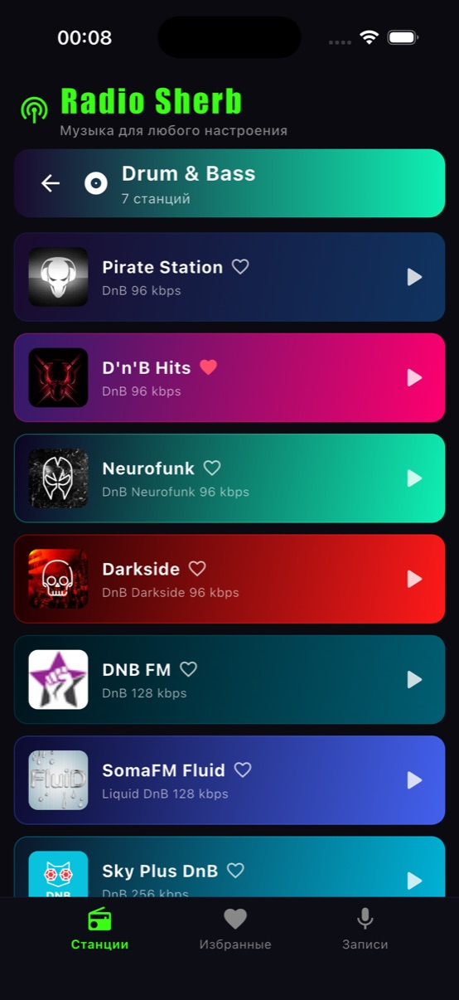
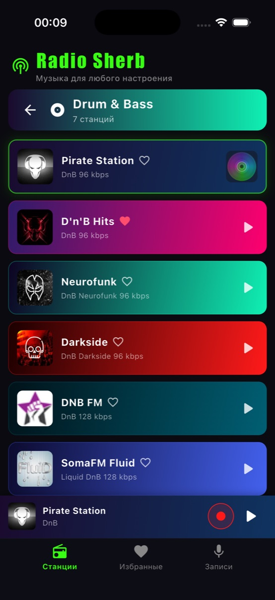
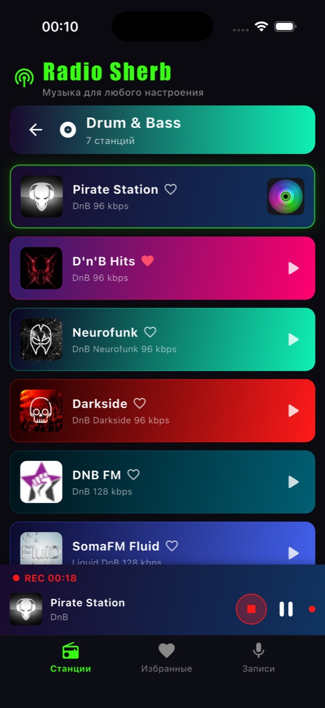
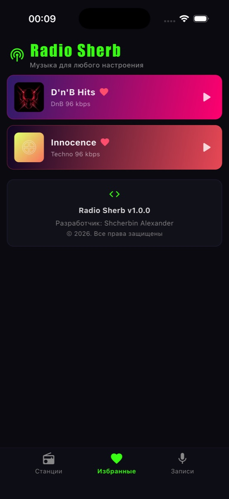
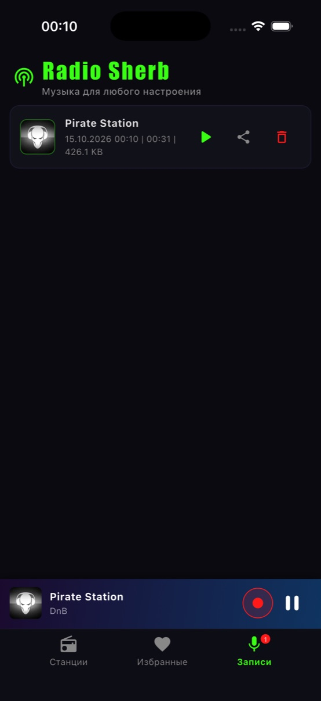

Что это за приложение и для кого оно.
Прямое воспроизведение интернет-потоков: AAC (Radio Record, DFM), MP3, HLS. Автовосстановление соединения при обрыве потока — приложение само переподключается и продолжает эфир.
Станции сгруппированы в каталог жанров и поджанров:
Для слушателей электронной сцены: диджеев, которые ловят новый трек в эфире, для тренировок, поездок и фоновых сессий. Всё, что играет — можно не бояться потерять: просто нажми запись.
Полный перечень функций приложения.
Жанры, поджанры и живые потоки, которые уже в приложении.
Сценарий «услышал трек — сохранил» — от старта записи до прослушивания.
Жанр → карточка станции → она начинает играть, появляется плеер-бар.
Кнопка записи в плеер-баре. Вверху плеера — таймер REC. Поток сохраняется в AAC.
Файл сохраняется с метаданными: станция, дата, длительность, размер.
Вкладка «Записи»: воспроизведение, авто-переход к следующей записи, share, удаление.
Реальные экраны приложения (iPhone 17 Pro, iOS 26.5).





С чем собрано приложение и как устроен код.